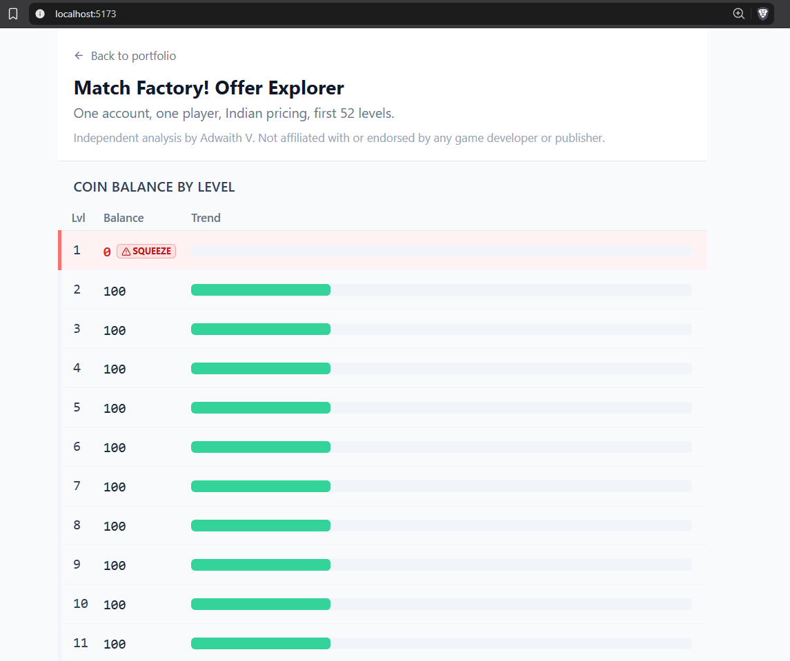

Mobile F2P · Offer timing · Hand-logged play data
Built 22 to 23 September 2026, inside a 48-hour window, from a method I had written down beforehand. Every step of the build is timestamped in a log I kept alongside it, including the places where I departed from my own method.
Scope. One account, one player, Indian pricing, levels 1 to 52, played 22 to 23 September 2026. Every number here was logged by hand from my own session. Nothing is modelled, scraped or estimated.
The instrument caveat. Offers in a live mobile game are targeted by behaviour, so the offers in this log are the ones this account was served. They are not the game's offer set, and a second account would almost certainly see different prices and timing. Read this as an instrument and a set of hypotheses, not as a description of how the game monetises everyone.
Independent. Independent analysis by Adwaith V. No affiliation with, and no endorsement by, any game developer or publisher. Prices are as displayed to this account on those dates; store pricing is routinely varied by region and cohort.

The call
What I did. Played the first 52 levels of a live match-3 title, logged every level by hand (result, time left, coins in and out, lives, every offer shown and its price), then built a small web tool that derives the coin balance level by level and lines the priced offers up against it.
What the run showed. The coin balance never went negative. It ended at +360 with 460 earned and 100 spent, across 4 failed attempts in 52 levels. Meanwhile the game showed a priced offer three times, the first at level 15. The offers arrived long before any need for them did.
The call. Gate the first priced offer on a measured need state rather than a level number, and judge it on purchase rate per offer shown, not on offers shown.
Pillar 01 · What I measured
The schema was fixed before the session started, so the log could not quietly bend toward whatever I found.
The loop being logged
Economy
coinsEarned, coinsSpent, spentOn. Enough to derive a running balance without ever asking the game for one.
Pressure
result, timeLeftSeconds, livesLeft. Failure and the lives state are what a paywall would have to lean on.
Selling
offerShown, offerType, offerPriceInr. Every surface that asked for money or attention, priced where a price was shown.
Unlocks
eventOrPassUnlocked. The events and passes that change the rules mid-run, such as the key challenge at level 15 and the pass at level 33.
56 rows across 52 distinct levels: a level that was failed and replayed keeps one row per attempt.
Pillar 02 · What the run showed
Three things in the log point the same way: through level 52 this account was never short of anything it could buy.
Coins
460 earned, 100 spent, ending at +360. The balance never went negative. The only spend in 52 levels was 100 coins on a booster at level 49.
Failure
4 failed attempts, at levels 31, 34 (twice) and 37. No fail was ever converted into a paid continue.
Lives
Lives read as infinite on 29 of 56 rows, mostly through key-event windows. A lives paywall cannot bite while a timed unlimited window is running.
Offers
An offer was on screen for 28 of 56 rows. Three carried a price: a key challenge at level 15 (1,499 or 1,950 in a bundle), a coin bundle at level 23 (199), and a pass at level 33 (999).
Offer exposure ran at roughly half of all logged rows while the resource those offers relieve was never scarce. Exposure and need were not on the same clock.
Pillar 03 · The call
One decision, one movement I would expect, and the result that would prove me wrong.
Pillar 04 · The tool
It derives everything from the CSV, so anyone can swap in their own log and get their own answer.
Balance timeline
Collapses multiple attempts per level into one net delta, accumulates, and marks the first point the balance cannot cover a spend. Level 1 always reads 0: the tutorial shows no coin or lives UI, for anyone.
Offer value
Groups priced offers by type and compares each against the coin cost of a continue, so a price can be read as what it substitutes for.
The data ships with it
Both CSVs are in the repo: the cleaned play log and the raw observation sheet with level timers and booster notes.
Built in 48 hours
React, TypeScript and Vite, deployed on Vercel. The build log is timestamped step by step, including where the method failed and what I did instead.
Other teardowns in this series: a forecast graded after launch, a pre-launch retention plan and the measured economy model.